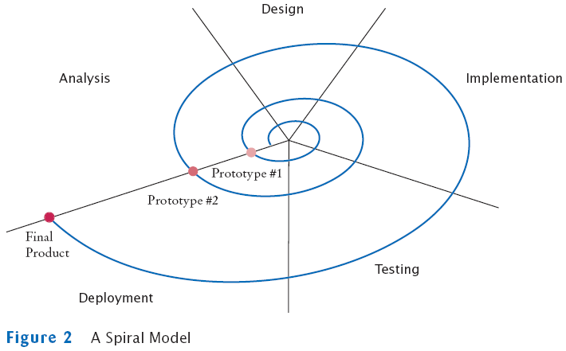

The Spiral Model
- Breaks development process down into multiple phases
- Early phases focus on the construction of prototypes
- Lessons learned from development of one prototype can be applied
to the next iteration
- Problem: can lead to many iterations, and process can take too
long to complete
